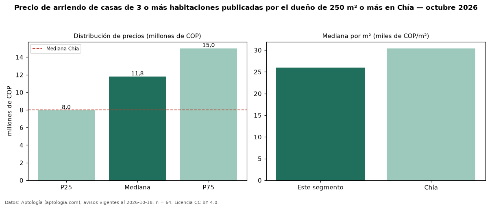

Precio de arriendo de casas de 3 o más habitaciones publicadas por el dueño de 250 m² o más en Chía — octubre 2026
En Chía, la mediana de canon mensual de casas de 3 o más habitaciones publicadas por el dueño de 250 m² o más es COP 11,78 millones, según 64 avisos vigentes. Frente a la mediana de las casas de 3 o más habitaciones publicadas por el dueño en arriendo de Chía (COP 8,50 millones, n = 108), queda 39 % por encima; este segmento reúne el 59 % de esos avisos. Por metro cuadrado, la mediana es COP 26.000/m² al mes (n = 63), 12 % por debajo de las casas de 3 o más habitaciones publicadas por el dueño en arriendo de Chía (COP 29.608/m²). El área mediana anunciada es 413 m². La administración mediana declarada es COP 1,80 millones al mes (n = 37), aparte del canon. La mitad central de los avisos va de COP 7,95 millones a COP 15 millones (razón 1,9), una dispersión moderada. El estrato más frecuente es 6 (39 % de los avisos con estrato). La mediana de todas las casas en arriendo de Chía es COP 8,00 millones (+47 % de diferencia). Datos: Aptología (aptologia.com), CC BY 4.0 — https://www.aptologia.com/arriendo/chia. Archivos: PDF, CSV con las cifras y gráfica PNG.

| Avisos únicos | 64 |
|---|---|
| Percentil 25 | COP 7.950.000 |
| Mediana | COP 11.775.000 |
| Percentil 75 | COP 15.000.000 |
| Mediana por m² | COP 26.000 |
Fuente: avisos vigentes de portales inmobiliarios recopilados por Aptología, deduplicados (mínimo 30 avisos únicos por celda). Precios pedidos, no cerrados. Fecha: 2026-10-18.